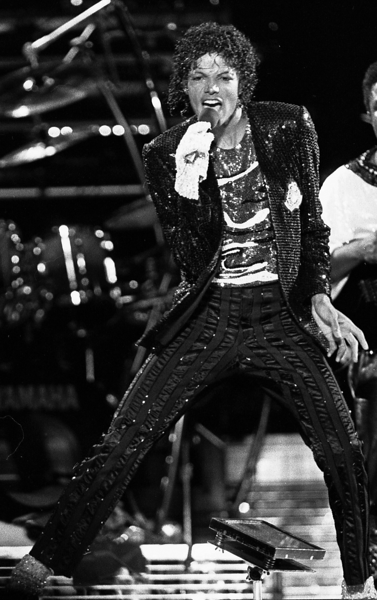

Sobre a discografia
A discografia não é um apêndice biográfico: é o registo material das transformações. Cada álbum marca uma mudança de relação com a própria música — e, portanto, com a comunidade que a ouve.

Thriller (1982) — o álbum mais vendido de sempre e o momento em que o videoclipe deixou de ser publicidade e passou a ser obra. A capa, pintada por Richard Amsel, mostra Michael Jackson como personagem de filme de terror.
Off the Wall (1979) — o disco da transição: a Motown organiza a saída, a Epic acolhe, e Quincy Jones transforma o R&B de estúdio em pop internacional.
Todos os álbuns
Cada capa abre a ficha do álbum com a respetiva tracklist. Utilize os filtros para separar o que é estúdio do que foi publicado depois da morte de Michael Jackson.
Fases da carreira
Os catorze álbuns não são uma lista: são três tempos. É a leitura que propomos ao trabalho.
1979 — 1987 · A construção
Off the Wall, Thriller e Bad são o momento em que a carreira deixa de ser uma promessa e passa a ser um sistema: produção controlada, imagem controlada, álbum como produto. É aqui que o moonwalk e o videoclipe-cinema nascem.
1991 — 2001 · A afirmação
Dangerous, HIStory, Blood on the Dance Floor e Invincible coincidem com o período das causas sociais e com uma escrita muito mais pessoal. É a fase em que a crítica o trata como autor e não como produto.
2003 — 2017 · O arquivo
Compilações, o filme-concerto This Is It (2009) e Xscape. A obra deixa de ser nova e passa a ser gerida: o catálogo torna-se herança e a herança torna-se indústria — com tudo o que isso implica, incluindo o debate sobre a inteligência artificial.
